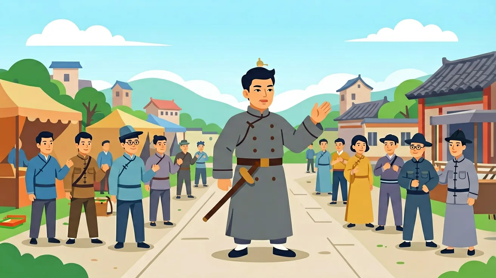
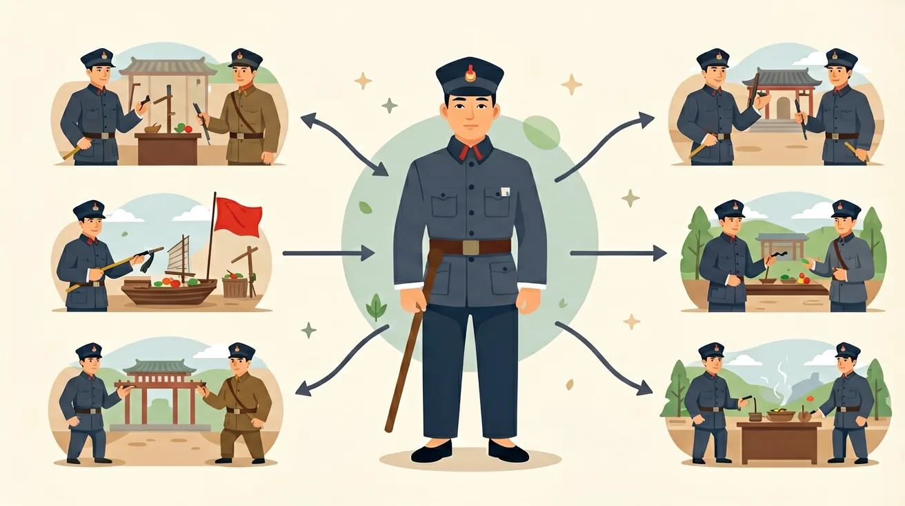

1. 你知道鸦片战争前中英贸易的主要商品是什么吗？2. 林则徐虎门销烟销毁的是什么？3. 你认为清朝在战争中失败的根本原因可能有哪些？
1. 《南京条约》中开放的通商口岸不包括以下哪个城市？A. 上海 B. 广州 C. 天津 D. 厦门 2. 第二次鸦片战争期间被焚毁的皇家园林是？3. 列举两个鸦片战争对中国社会造成的影响。
常见误区：学生常将《南京条约》赔款2100万两白银误解为'黄金'。错因在于对清代货币单位'两'的概念模糊。诊断时需强调：1两白银≈37克，当时1两白银可购100斤大米，2100万两相当于8亿斤大米，直观感受其巨额。
迁移探究：假设你是19世纪中叶的福建茶商，分析《南京条约》实施后，你的茶叶生意会面临哪些新机遇与挑战？请从运输成本、竞争对手、税收变化等角度展开论述。
先独立作答，再点选项查看对错与错因。
英国议会通过军事拨款决议的直接原因是？
《南京条约》中对中国经济影响最深的条款是？
下列哪项最能说明鸦片战争是近代史开端？
林则徐组织编译的____成为近代中国开眼看世界的第一部著作
答案：《四洲志》
该书系统介绍西方各国概况
1843年签订的____附件规定英国获得领事裁判权
答案：《虎门条约》
破坏中国司法主权的重要条款
关于'半殖民地'的正确理解是？
分析18-19世纪中英贸易结构变化
第一个常见错误是认为林则徐虎门销烟直接导致鸦片战争爆发。实际上1839年销烟后，中英贸易冲突已持续一年多，直到1840年6月英军舰队抵达广东才正式开战。学生容易混淆因果关系的根源在于简化历史进程，忽略英国议会早在1839年10月就通过战争拨款，以及义律蓄意扩大冲突的细节。
第二个误区是夸大《南京条约》中2100万银元赔款的影响。这个数字相当于清政府年财政收入的1/3，但更深远的影响在于五口通商和协定关税。学生常犯此错是因为量化数据更易记忆，却忽视了制度性条款对中国主权的长期侵蚀，比如1843年《虎门条约》规定的领事裁判权。
第三个典型错误是将"闭关锁国"政策理解为完全封闭。实际上广州十三行在1757-1842年间年均贸易额达1500万两白银，占清朝外贸总量80%以上。这种误解源于对"海禁"政策的片面理解，没注意到清廷通过行商制度实现的有限开放，正如乾隆帝1793年给马戛尔尼敕书所示"天朝物产丰盈，无所不有"的矛盾心态。
在当代国际贸易谈判中，鸦片战争后形成的"最惠国待遇"条款仍是重要概念。2020年中美贸易协定谈判时，美国要求中国给予的"非歧视性待遇"就源自1843年《虎门条约》确立的现代国际贸易规则雏形。理解这一历史渊源，有助于分析当前贸易争端中的制度性因素。
海关数据可视化技术常以五口通商时期数据为典型案例。1845年上海开埠首年进出口总值仅98万两，到1855年飙升至1280万两，这种指数级增长模式被用于现代港口经济预测模型的训练。宁波大学2022年开发的"历史外贸数据模拟系统"就采用了该时期13种主要商品的关税数据。
国际法教学常援引1842年《南京条约》中文本与英文本的差异案例。条约中"永久占有香港"的表述，在英文本为"perpetual possession"，而中文本用"常远据守"的模糊表述。这种文本分析训练现在仍是培养条约翻译人才的重要内容，香港大学法学院每年都会组织相关案例研讨。
思考问题一：如果清军在1841年1月的穿鼻之战获胜，是否可能改变战争结局？从军事技术角度分析，英军蒸汽动力战舰"复仇女神号"航速达8节，配备32磅炮，其机动性远超清军水师战船。但更关键的是工业革命带来的后勤保障能力——英国远征军携带了3年补给，而清廷在浙江战役时已出现"兵饷不继"的状况。
思考问题二：为什么南京条约后广州反入城斗争持续到1849年？这涉及传统朝贡体系与近代外交观念的冲突。条约规定的外交平等与清朝"夷夏之防"观念产生剧烈碰撞，如1846年耆英准许英人入城引发士绅联名上书，背后是"广州体制"下地方精英与中央政府的复杂博弈，这种张力在当代国际关系中也时有体现。
先看19世纪初的世界格局，英国完成工业革命后棉纺织品产量增长400倍，急需打开中国市场。而清廷仍延续1759年《防范外夷规条》，通过十三行每年限额贸易。这种矛盾在1834年东印度公司垄断权取消后激化，英国散商鸦片走私量从1800年2000箱暴涨至1838年40200箱。接着考察转折点，林则徐1839年虎门销烟2万余箱，但现代禁毒思维与殖民贸易逻辑产生根本冲突——英国鸦片利润占印度殖民当局财政收入的17%，这解释了为何议会271票对262票的微弱优势就决定开战。战争进程暴露清军代差，如1842年吴淞战役英军32艘战舰仅阵亡2人就摧毁166座炮台。最后聚焦条约体系影响，《南京条约》开放五口使上海迅速崛起，到1850年取代广州成为最大外贸中心；协定关税将税率固定在5%左右，对比同期美国关税40%，直接导致江南手工业衰退。这种秩序重构不仅体现在1843年《五口通商章程》的细则中，更深远地塑造了近代中国的经济地理格局。
❓ 为什么鸦片战争后中国要签那么多不平等条约？
❓ 林则徐禁烟到底是对还是错？
❓ 老百姓的生活真的变差了吗？
学完这一课，这些问题你都能自信地回答。
🎯 能说出鸦片战争后中国社会性质的变化
🎯 能分析《南京条约》对中国主权的破坏
🎯 能判断列强经济侵略对百姓生活的影响
✅ 根本原因是英国蓄谋侵略
💡 混淆直接原因与根本原因
✅ 领事裁判权破坏司法主权更严重
💡 忽视隐性主权条款
口诀：鸦片战争炮声响，主权沦丧始遭殃
类比：像被强行打开的家门，强盗自己定规矩
《南京条约》开放的通商口岸位于？
鸦片战争后中国社会性质变为？
（升学题）下列哪项属于《南京条约》破坏的经济主权？
（迁移题）若现代某国要求'进口商品低关税'，类似条约中哪项？
（真题）列强在鸦片战争后获得的最危险特权是？

